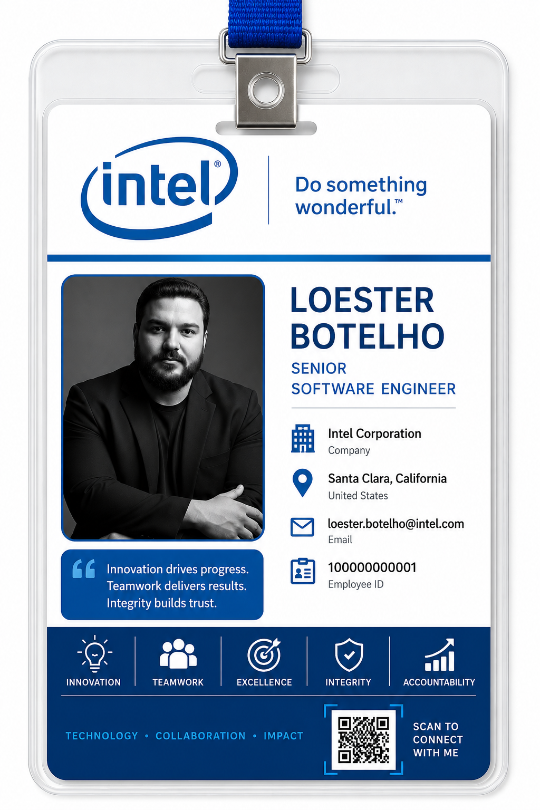

My name is Loester Botelho. I am a Senior Software Engineer at Intel.
I design, develop, and maintain scalable enterprise software applications.
I work with Java, Spring Boot, SQL, REST APIs, cloud technologies, Docker, and Kubernetes.
I collaborate with cross-functional teams to deliver reliable, secure, and high-quality software.
I review pull requests, mentor developers, and ensure that the source code follows engineering best practices.
I create unit tests and integration tests to improve software quality and reliability.
I deploy applications, monitor production environments, and analyze logs to quickly identify and resolve issues.
I solve complex technical problems and continuously improve software architecture and development processes.
| Time | Activity Description |
|---|---|
| 8:00 a.m. | I start my workday by reviewing my priorities and organizing my development tasks. |
| 8:15 a.m. | I check my emails, respond to important messages, and follow up on pending requests. |
| 8:30 a.m. | I attend the Daily Scrum meeting, share project updates, and discuss technical challenges with my team. |
| 9:00 a.m. | I analyze business requirements and translate them into efficient software solutions. |
| 10:00 a.m. | I design scalable software architecture and develop secure, high-performance applications. |
| 11:00 a.m. | I write unit tests and integration tests to ensure software quality and reliability. |
| 11:30 a.m. | I review pull requests and provide feedback according to software engineering best practices. |
| 12:00 p.m. | I have lunch with my colleagues. |
| Time | Activity Description |
|---|---|
| 1:00 p.m. | I test new features, validate application behavior, and ensure requirements are correctly implemented. |
| 2:00 p.m. | I investigate bugs, identify the root cause of technical issues, and implement effective solutions. |
| 3:00 p.m. | I deploy new application releases and verify that all services are running correctly after deployment. |
| 3:30 p.m. | I monitor production environments, analyze system logs, and respond to incidents. |
| 4:00 p.m. | I analyze application metrics and identify performance bottlenecks to improve system efficiency. |
| 5:00 p.m. | I plan my next tasks and organize my priorities for tomorrow. |
| 5:30 p.m. | I finish my workday and review my daily achievements. |
I start my workday by reviewing my priorities and organizing my development tasks.
I check my emails, respond to important messages, and follow up on pending requests.
I plan my next activities, organize the sprint backlog, and prepare for upcoming project deliveries.
I attend the Daily Scrum meeting, share project updates, and discuss technical challenges with my team.
I collaborate with software engineers, product owners, and QA specialists to deliver high-quality software solutions.
I mentor junior developers, share technical knowledge, and support their professional development.
I analyze business requirements and translate them into efficient software solutions.
I design scalable software architecture and develop secure, high-performance applications.
I implement new features and continuously improve existing applications based on business needs.
I write unit tests and integration tests to ensure software quality, reliability, and maintainability.
I automate repetitive tasks and improve the software development workflow using modern development tools.
I optimize application performance and continuously improve system reliability and scalability.
I review pull requests, analyze code quality, and approve or request changes according to software engineering best practices.
I perform code reviews and provide constructive feedback to improve software quality and maintain coding standards.
I test new features, validate application behavior, and ensure that all requirements are correctly implemented.
I investigate bugs, identify the root cause of technical issues, and implement effective solutions.
I analyze application metrics and identify performance bottlenecks to improve system efficiency.
I solve complex technical problems by applying software engineering principles and best practices.
I deploy new application releases and verify that all services are running correctly after deployment.
I monitor production environments, analyze system logs, and respond to incidents to ensure application stability.
I investigate production issues and implement solutions to maintain system reliability and availability.
I update technical documentation and maintain accurate project information for the development team.
I share technical knowledge, best practices, and lessons learned with the engineering team.
I improve development processes by documenting solutions and creating reusable technical knowledge.